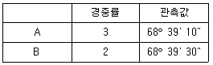
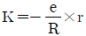
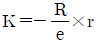
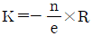
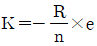
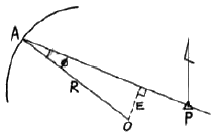
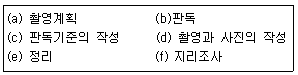
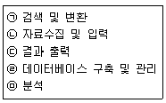

지적기사 (2007-05-13 기출문제)
1과목: 지적측량
1. 임의의 두 점간의 경사거리와 조준의의 경사분획을 다음과 같이 측정하여 두 점간의 수평거리를 구하고하 한다. 두 점간의 수평거리는 얼마인가? (단, 경사거리:82.1m, 경사분획:+6.5)
- 79.9m
- 80.9m
- 81.9m
- 82.9m
(정답률: 알수없음)

2. 북위 38°와 동경 127° 선이 교차되는 점을 중부원점이라 한다. 이 때의 위도는?
- 측지위도
- 지심위도
- 천문위도
- 극좌표
(정답률: 알수없음)
3. 경중률이 서로 다른 데오도라이트 A, B를 사용하여 동일한 측점의 협각을 관측한 결과 다음과 같은 성과를 얻었다고 할 때 최확값은?

- 68° 39‘ 15“
- 68° 39‘ 18“
- 68° 39‘ 20“
- 68° 39‘ 23“
(정답률: 알수없음)
4. 지적도근측량을 배각법에 의하여 측량결과가 허용범위 이내인 때에 그 오차의 배부방법으로 옳은 것은? (단, K는 각 측선의 배분할 초단위의 각도, e는 초단위의 오차, R은 폐색변을 포함한 각 측선장의 반수의 총합계, r은 각 측선장의 반수, n은 변의 수)




(정답률: 알수없음)
5. 다음 그림에서 E=33.9189m이고, R=200.00m이면 ø각은 얼마인가?

- 9° 50‘ 48“
- 9° 45‘ 51“
- 8° 53‘ 48“
- 5° 35‘ 42“
(정답률: 알수없음)
6. 전파기 또는 광파기측량방법으로 지적삼각점을 관측할 경우 점간거리는 5회 측정하여 그 측정치의 최대치와 최소치의 교차가 평균치의 얼마 이하인 때에 그 평균치를 측정거리로 하는가?
- 5만분의 1 이하
- 10만분의 1 이하
- 15만분의 1이하
- 20만분의 1 이하
(정답률: 알수없음)
7. 지적삼각보조측량 방법에 대한 설명으로 틀린 것은?
- 지적삼각보조점은 교회망 또는 교점다각망으로 구성한다.
- 전파기 또는 광파기 측량방법에 의하여 다각망도선법으로 할 때 1도선의 거리는 4km 이하로 한다.
- 2방향 교회법으로만 실시하여야 한다.
- 삼각형의 내각은 30° 이상 120° 이하로 한다.
(정답률: 알수없음)
8. 다음 중 측판측량을 위해 측판을 세울 때의 오차로 결과에 가장 큰 영향을 주는 것은?
- 측판이 수평으로 되지 않을 때
- 측판의 구심이 올바르지 않을 때
- 앨리데이드의 조정이 불충분할 때
- 측판의 표정이 올바르지 않을 때
(정답률: 알수없음)
9. 지적도근측량에서 연결오차의 허용범위를 결정하는 경우 경계점좌표등록부를 비치하는 지역은 그 축척 분모를 얼마로 하는가?
- 3000
- 1000
- 500
- 300
(정답률: 알수없음)
10. 지적삼각측량은 무엇을 기초로 하여 실시하는가?
- 삼각점과 지적삼각점
- 삼각점과 수준점
- 지적삼각보조점과 수준점
- 삼각점과 도근점
(정답률: 알수없음)
11. 지적삼각보조점의 수평각 관측방법은?
- 단각법
- 배각법
- 방향관측법
- 각관측법
(정답률: 알수없음)
12. 세부측량에서 사용하는 거리측정의 기준으로 틀린 것은?
- 측판측량방법으로 지적도를 비치하는 지역에서는 5cm 단위로 측정한다.
- 경위의측량방법에 의할 때는 1cm 단위로 측정한다.
- 측판측량방법으로 임야도시행지역에서는 10cm 단위로 측정한다.
- 측판측량방법에 의하여 거리를 측정하는 경우 신축의 보정이 필요한 경우 도곽선이 늘어난 경우에는 실측거리에 보정량을 더하고, 줄어든 경우에는 실측거리에서 보정량을 뺀다.
(정답률: 알수없음)
13. 축척이 서로 다른 도면에 동일 경계선이 등록되어 있는 경우 어느 경계선에 따라야 하는가?
- 토지소유자 의견에 따라야 한다.
- 축척이 큰 것에 따른다.
- 축척이 작은 것에 따른다.
- 평균하여 결정한다.
(정답률: 알수없음)
14. 지적도면의 작성에 대한 설명으로 옳지 않은 것은?
- 도면은 측량결과도에 의하여 작성할 수 있다.
- 삼각점 및 지적측량기준점은 0.2mm 폭의 선으로 제도한다.
- 도면의 위쪽은 항상 북쪽이다.
- 도면에 등록하는 지번은 5mm 크기의 고딕체로 한다.
(정답률: 알수없음)
15. 다음 중 경계의 제도에 대한 설명으로 옳은 것은?
- 경계는 0.1밀리미터 폭으로 제도한다.
- 1필지의 경계가 도곽선에 걸쳐 등록되어 있는 경우에는 도곽선 밖의 여백에 경계를 제도할 수 없다.
- 경계점좌표등록부시행지역의 도면에 등록하는 경계점간 거리는 붉은색으로 1.5밀리미터 크기의 아라비아 숫자로 제도한다.
- 지적측량기준점 등이 매설된 토지를 분할하는 경우 그 토지가 작아서 제도하기가 곤란한 경우에는 그 도면의 여백에 그 축척의 15배로 확대하여 제도할 수 있다.
(정답률: 알수없음)
16. 경위의측량방법으로 세부측량을 한 지역의 필지별 면적측정 방법은?
- 전자면적측정기법
- 좌표면적계산법
- 도상삼변법
- 플라니미터법
(정답률: 알수없음)
17. 지적삼각점의 관측 및 계산에 있어 수평각의 측각공차에 대한 기준이 잘못된 것은?
- 1방향각-30초 이내
- 1측회의 폐색-±30초 이내
- 기지각과의 차-±40초 이내
- 삼각형내각관측치의 합과 180도와의 차-±40초 이내
(정답률: 알수없음)
18. 등록전환측량에 대한 설명으로 잘못된 것은?
- 토지대장에 등록하는 면적은 등록전환측량의 결과에 의하여야 하며, 임야대장의 면적을 그대로 정리할 수 없다.
- 등록전환할 일단의 토지가 2필지 이상으로 분할하여야 할 토지의 경우에는 먼저 지목별로 분할 후 등록전환하여야 한다.
- 경계점좌표등록부를 비치하는 지역과 인접되어있는 토지를 등록전환 하는 경우에는 경계점좌표등록부에 등록하여야 한다.
- 1필지의 일부를 등록전환 하는 경우 등록전환으로 인하여 말소하여야 할 필지의 면적은 반드시 임야분할 측량결과도에서 측정한다.
(정답률: 알수없음)
19. 축척 1200분의 1 지적도 시행지역에서 도상에서 전자면적 측정기로 2회 측정한 평균값이 250m2인 경우 그 교차에 대한 허용면적은?
- 8.9m2
- 9.0m2
- 10.0m2
- 12.8m2
(정답률: 알수없음)
20. 지적측량의 일반적인 순서를 나열한 것으로 옳은 것은?
- 준비→세부측량→면적측정→기초측량→지적공부작성
- 준비→세부측량→기초측량→면적측정→지적공부작성
- 준비→기초측량→세부측량→면적측량→지적공부작성
- 준비→기초측량→면적측정→세부측량→지적공부작성
(정답률: 알수없음)
2과목: 응용측량
21. 수준기의 감도가 40“ 인 레벨로 80m 전방의 표척을 시준하였더니 기포관의 눈금이 1개 이동되었다. 이 때 생기는 위치 오차는 얼마인가?
- 0.012m
- 0.014m
- 0.016m
- 0.020m
(정답률: 알수없음)
22. 짧은선의 간격, 굵기, 길이 및 방향 등으로 지표의 기복을 나타내는 것으로 우모법이라고도 하는 지형 표시 방법은?
- 점고법
- 등고선법
- 영선법
- 채색법
(정답률: 알수없음)
23. 다음의 설명 중 옳은 것은?
- 축척 1/500 도면상의 면적은 실제 면적이 1/1000이다.
- 도면의 축척을 1/600에서 1/200로 확대했을 때 도면의 크기는 6배가 된다.
- 축척 1/300 도면상의 면적은 실제 면적의 1/9000이다.
- 도면의 축척을 1/500에서 1/1000로 축소했을 때 도면의 크기는 1/4이 된다.
(정답률: 알수없음)
24. 클로소이드 완화곡선의 설치법이 아닌 것은?
- 주접선에서 직교좌표에 의한 방법
- 현에서 직교좌표에 의한 방법
- 접선으로부터 직교좌표에 의한 방법
- 종곡선으로부터 교회법에 의한 방법
(정답률: 알수없음)
25. 경사터널 천정의 두 점에 대한 고저차를 구하기 위하여 측량을 하였다. 두 점의 고저차는? (단, 시준고와 기계고는 천정으로부터 측정값이며 기계고=1.5m, 시준고=1.56m, 경사거리=26.55m, 연직각 +15° 20‘)
- 9.73m
- 7.43m
- 6.61m
- 4.31m
(정답률: 알수없음)
26. 위성영상은 다음 중 어느 투영상과 가깝다고 보는가?
- 정사투영상
- 외사투영상
- 중심투영상
- 평사투영상
(정답률: 알수없음)
27. 항공사진측량의 일반적인 작업순서로 맞는 것은?

- a-f-d-c-b-e
- a-d-c-b-f-e
- f-a-d-c-b-e
- f-a-c-b-d-e
(정답률: 알수없음)
28. 표고 2000m 비행기에서 초점거리 154mm의 사진기로 촬영한 수직항공사진의 축척은?
- 약 1/10000
- 약 1/13000
- 약 1/15000
- 약 1/18000
(정답률: 알수없음)
29. 수칙사진측량의 수치지형모형자료의 자료기반구축에서 영상소를 재배열 할 경우에 주로 이용하는 내삽법과 거리가 먼 것은?
- 최근린 보간법
- 공일차 보간법
- 공액 보간법
- 공삼차 보간법
(정답률: 알수없음)
30. 원격탐사에 의한 측정에 영향을 미치는 요인과 가장 거리가 먼 것은?
- 물체의 반사 또는 방사
- 광원의 입사각과 물체 및 센서 위치관계
- C-계수
- 대기의 반사, 투과, 흡수, 산란
(정답률: 알수없음)
31. 항공사진의 특수 3점이 아닌 것은?
- 주점
- 등각점
- 렌즈의 초점
- 연직점
(정답률: 알수없음)
32. 터널이 긴 경우 굴진 공정기간의 단축을 위하여 중간에 수직 터널이나 경사 터널을 설치하고 본 터널과의 좌표를 일치시키기 위하여 실시하는 측량은?
- 지하수준측량
- 터널내 고저측량
- 터널내 중심측량
- 터널내외 연결측량
(정답률: 알수없음)
33. 일반적인 측량 방법과 비교할 때 사진측량의 장점에 대한 설명으로 틀린 것은?
- 축척변경이 용이하다.
- 시설 및 장비의 비용이 적게 든다.
- 동체측정에 의한 기록보존이 용이하다.
- 정량적 및 정성적 측량이 가능하다.
(정답률: 알수없음)
34. 다음 중 가장 정확한 표고 측정의 기준이 되는 점은 어느 것인가?
- 삼각범
- 수준원점
- 중간점
- 이기점
(정답률: 알수없음)
35. 노선측량에서 중심선을 따라 수준측량을 실시할 때 노선에서 약간 떨어진 곳에 설치하는 수준점(B.M.)의 간격으로 가장 적합한 것은?
- 약 1km
- 약 5km
- 약 10km
- 약 20km
(정답률: 알수없음)
36. 클로소이드의 형식 중 반향곡선 사이에 2개의 클로소이드를 삽입하는 것은?
- 복합형
- S형
- 철형
- 난형
(정답률: 알수없음)
37. 수준측량에서 고저의 오차는 거리와 어떤 관계가 있는가?
- 거리에 비례한다.
- 거리에 반비례한다.
- 거리의 제곱근에 비례한다.
- 거리의 제곱근에 반비례한다.
(정답률: 알수없음)
38. 등고선의 성질에 관한 설명 중 맞지 않는 것은?
- 등고선은 최대경사선과 직교를 이룬다.
- 등고선은 도면 내외 어느 곳에서도 폐합되지 않는 경우가 있다.
- 동일 등고선 상에 있는 모든 점은 같은 높이이다.
- 등고선은 절벽이나 동굴의 지형을 제외하고는 교차하지 않는다.
(정답률: 알수없음)
39. GPS 위성 체계에 대한 설명으로 틀린 것은?
- 고도 5° 이상의 지구 상 어디서나 4개 이상의 위성을 관측할 수 있도록 궤도를 구성하였다.
- 지상 1000km에서 타원궤도를 돌고 있다.
- 지구를 둘러싸는 60° 간격의 6개 궤도상에 배치되어 있다.
- GPS는 하루 24시간 어느 시간에서나 이용이 가능하다.
(정답률: 알수없음)
40. 단곡선에서 교각 I=30°, 반경 R=150m, 곡선시점(B, C)까지의 추가거리 110.25m일 때 곡선종점(E.C)까지의 추가거리는?
- 150.25m
- 176.76m
- 183.25m
- 188.79m
(정답률: 알수없음)
3과목: 토지정보체계론
41. 다음 중 래스터식 자료구조와 거리가 먼 것은?
- 그리드(Grid)
- 폴리곤(Polygon)
- , 셀(Cell)
- 픽셀(Pixel)
(정답률: 알수없음)
42. 지적전산화의 필요성으로 가장 거리가 먼 것은?
- 지적민원처리의 신속성
- 전산화를 통한 중앙통제
- 관련업무의 능률과 정확도 향상
- 토지관련 정책자료의 다목적 활용
(정답률: 알수없음)
43. 토지정보시스템의 구성요소로 가장 거리가 먼 것은?
- 조직과 인력
- 자료
- 소프트웨어
- 처리시간
(정답률: 알수없음)
44. 자료에 대한 내용, 품질, 사용조건 등의 정보를 제공하는 데이터로 데이터의 이력서라고 할 수 있는 것은?
- 레이어
- 버퍼
- 메타데이터
- 인덱스
(정답률: 알수없음)
45. 다음 공간정보의 형태에 대한 설명 중 틀린 것은?
- 점은 위치 좌표계의 단 하나의 쌍으로 표현되는 대상이다.
- 선은 점이 연결되어 만들어지는 집합이다.
- 표면은 공간적 대상물의 범주로 간주 되며 연속적인 자료의 표현이다.
- 면적은 분리된 단위를 형성하는 것에 가까운 점 분할의 집합이다.
(정답률: 알수없음)
46. 다음 중 자료의 위상(Topology) 모형의 폴리곤 구조가 갖는 특성과 가장 거리가 먼 것은?
- 다의성
- 계급성
- 인접성
- 형상
(정답률: 알수없음)
47. 토지정보체계에서도 점차 데이터베이스관리시스템(DBMS)기반의 운용방식이 증가하고 있다. 다음 중 데이터베이스 관리시스템의 장점이 아닌 것은?
- 자료의 중복을 최소화할 수 있다.
- 자료에 독립성을 부여할 수 있다.
- 효율적인 자료호환과 자료의 공유가 용이하다.
- 시스템을 단순화할 수 있고 비용이 저렴하다.
(정답률: 알수없음)
48. 다음 중 토지정보체계의 기초가 되는 다목적 지적의 기본 요소가 아닌 것은?
- 측지기준망
- 토지정책자료
- 기본도
- 지적도
(정답률: 알수없음)
49. PBLIS의 시스템 구성에 해당되지 않는 것은?
- 지적공부광리시스템
- 지적측량성과작성시스템
- 공시지가관리시스템
- 지적측량시스템
(정답률: 알수없음)
50. PBLIS와 NGIS의 연계로 인한 장점으로 볼 수 없는 것은?
- 유사한 정보시스템의 개발로 인한 중복투자 방지
- 토지의 효율적인 이용 증진과 체계적 국토개발
- 토지관련 자료의 원활한 교류와 공동 활용
- 지적측량절차의 간소화
(정답률: 알수없음)
51. 지적정보센터에서 관리 및 활용하는 자료에 해당되지 않는 것은?
- 주민등록 전산자료
- 공시지가 전산자료
- 등기부 전산자료
- 지적위성기준점 관측자료
(정답률: 알수없음)
52. 도시정보체계에 대한 설명으로 틀린 것은?
- 도시정보체계는 UIS라고 하며 Urban Information System의 약어이다.
- 도시정보체계는 토지의 속성과 건물의 속성만을 입력할 수 있는 시스템이다.
- 도시종합관리의 기반시스템으로 시정업무의 정반에 활용할 수 있다.
- 도시정보체계는 도시를 중심으로 구축한 GIS라고도 할 수 있다.
(정답률: 알수없음)
53. 지적전산자료의 사용료에 관한 사항 중에서 적합한 것은?
- 심사 및 승인을 거쳐 지적전산자료를 이용할 때 사용료는 모두 무료이다.
- 시ㆍ군ㆍ구 지적전산자료 사용료는 현금으로 납부한다.
- 시ㆍ도 지적전산자료의 사용료는 수입증지로 납부한다.
- 행정자치부장관이 제공하는 지적전산자료의 사용료는 수입증지 또는 수입인지로 납부한다.
(정답률: 알수없음)
54. 전산정보처리조직의 사용자 권한등록파일에 등록하는 사용자 비밀번호의 기준은?
- 사용자가 영문을 포함하여 3 내지 12 자리로 정하여 사용한다.
- 사용자가 4내지 12자리로 정하여 사용한다.
- 사용자가 영문을 포함하여 5 내지 16자리로 정하여 사용한다.
- 사용자가 6 내지 16자리로 정하여 사용한다.
(정답률: 알수없음)
55. NGIS의 교환 포맷으로 알맞은 것은?
- MOSS
- DX-90
- TIGER
- SDTS
(정답률: 알수없음)
56. 다음 중 GIS의 구축 및 활용을 위한 과정을 순서대로 바르게 열거한 것은?

- ㉣-㉠-㉢-㉤-㉡
- ㉡-㉣-㉠-㉤-㉢
- ㉣-㉡-㉤-㉠-㉢
- ㉡-㉠-㉤-㉣-㉢
(정답률: 알수없음)
57. 다음 중 벡터데이터구조의 장점이 아닌 것은?
- 복잡한 현실세계에 대한 세밀한 묘사를 할 수 있다.
- 자료구조가 단순하다.
- 위상자료구조를 가질 수 있다.
- 세밀한 묘사에 비해 데이터용량이 상대적으로 작다.
(정답률: 알수없음)
58. 다음 중에서 공간정보(도형정보)를 담고 있지 않는 지적공부는?
- 지적도
- 임야도
- 토지대장
- 경계점좌표등록부
(정답률: 알수없음)
59. 지적도면을 스캐너로 입력한 전산자료에 포함될 수 있는 오차로 가장 거리가 먼 것은?
- 기계적인 오차
- 도면등록시의 오차
- 벡터자료의 래스터자료로의 변환 과정에서의 오차
- 입력도면의 평탄성 오차
(정답률: 알수없음)
60. 관계형 자료모델(relation data model)의 기본 구조 요소와 거리가 가장 먼 것은?
- 소트(sort)
- 속성(attribute)
- 행(record)
- 테이블(table)
(정답률: 알수없음)
4과목: 지적학
61. 지적공부의 등본 교부와 관계가 가장 깊은 것은?
- 지적공개주의
- 지적형식주의
- 지적국정주의
- 지적비밀주의
(정답률: 알수없음)
62. 대한제국에서 1898년 양전사업을 담당하기 위하여 최초로 설치된 기관은?
- 양지아문(量地衙門)
- 지계아문(地契衙門)
- 양지과(量地課)
- 임시토지조사국(臨時土地調査局)
(정답률: 알수없음)
63. 지적정리에서 2필지 이상의 토지를 합병 처리할 때 지번결정의 원칙은?
- 신규 지번으로 한다.
- 각 토지의 지번 중 수위의 지번으로 한다.
- 각 토지의 지번 중 말위의 지번으로 한다.
- 각 토지의 지번 중 인감필 지번으로 한다.
(정답률: 알수없음)
64. 경국대전 내용에 토지를 매매할 때 소유권 이전에 관하여 관에서 증명한 소유권증서와 같은 문서는?
- 양안(量案)
- 입안(立案)
- 명문(明文)
- 문기(文記)
(정답률: 알수없음)
65. 필지마다 지번을 붙여 구분하는 이유와 가장 거리가 먼 것은?
- 독립성
- 특정성
- 위치파악의 기준성
- 가치성
(정답률: 알수없음)
66. 우리나라에서 지적공부에 토지표시 사항을 결정 등록하기 위하여 택하고 있는 심사방법은?
- 실질심사
- 형식심사
- 공증심사
- 대질심사
(정답률: 알수없음)
67. 토지조사사업 당시 사정(査定)의 처분 행위는?
- 행정처분
- 사법행위
- 등기공시
- 재결행위
(정답률: 알수없음)
68. 소극적 등록제도의 설명으로 옳지 않은 것은?
- 토지등록을 의무화하지 않는다.
- 거래증서의 등록은 법률가의 손에 의해 다루어진다.
- 국가는 적법성, 유효성, 절차성 중 적법성만 인정한다.
- 거래행위에 따른 토지등록은 일반적으로 사유재산 양도 증서의 작성과 거래증서의 등록으로 구분한다.
(정답률: 알수없음)
69. 고구려에서 토지 면적단위체계로서 사용된 것은?
- 경무법
- 두락법
- 결부법
- 수등이척법
(정답률: 알수없음)
70. 조선시대의 토지대장인 양안(量案)에 대한 설명 중 틀린 것은?
- 지적과 측량을 관리하는 산학박사(算學博士)를 두어 양안을 관리하였다.
- 일면 전적(田籍)이라고도 하는 양안의 명칭은 시대와 사용처, 비치처에 따라 달랐다.
- 양안의 기록사항은 소재지, 지번, 토지등급, 지목, 면적, 토지형태, 사표(四標), 소유자 등이다.
- 양안에 토지를 표시함에 있어서는 양전의 순서에 의하여 1필지마다 천자문의 자번호(字番戶)를 부여하였다.
(정답률: 알수없음)
71. 토지조사사업에 대한 설명으로 틀린 것은?
- 지적제도와 등기제도 등 증명제도를 제도적으로 보장하기 위한 것이다.
- 토지에 대한 정량성과 통일성을 확립하지 못하였다.
- 지세수입의 증대를 위하여 은결(隱缺) 등을 찾아내어 세원을 확보하기 위한 것이다.
- 일본 이민자에게 토지를 불하 하여 일본 식민에 대한 제도적 지원대책을 확립하기 위한 것이다.
(정답률: 알수없음)
72. 지세징수를 위하여 이동지 정리를 끝낸 토지대장 중에서 민유과세지만을 뽑아 각 면마다 소유자별로 연기(連記)한 후 이것을 합계하였던 장부는?
- 별책토지대장
- 결부연명부
- 지세명기장
- 도전장
(정답률: 알수없음)
73. 간주지적도에 등록하는 토지대장의 명칭이 아닌 것은?
- 산 토지대장
- 을호 토지대장
- 간주 토지대장
- 별책 토지대장
(정답률: 알수없음)
74. 다음에서 망척제와 관계가 없는 것은?
- 이기(李沂)
- 해(海)학(鶴)유(遺)서(書)
- 산학박사(算學博士)
- 면적을 산출하는 방법
(정답률: 알수없음)
75. 토렌스 시스템의 기본원리에 해당되지 않는 것은?
- 거울이론
- 거래이론
- 커튼이론
- 보험이론
(정답률: 알수없음)
76. 지적제도의 필요성에 대한 사항으로 가장 거리가 먼 것은?
- 세수확보
- 소유권 보호
- 거래의신속
- 토지 분배
(정답률: 알수없음)
77. 토지에 대한 일정한 사항을 조사하여 지적공부에 등록하기 위하여 반드시 선행되어야 할 사항은?
- 토지용도의 결정
- 일필지의 경계설정
- 토지소유자의 결정
- 토지번호의 확정
(정답률: 알수없음)
78. 우리나라 법정지목을 구분하는 중심적 기준은 무엇인가?
- 토지의 위치
- 토지의 용도
- 토지의 성질
- 토지의 지형
(정답률: 알수없음)
79. 토지등록의 방법 중 인적편성주의에 대한 설명으로 옳은 것은?
- 개개의 토지를 중심으로 등록부를 편성하는 방식
- 동일 소유자에게 속하는 모든 토지를 당해 소유자의 대장에 기록하는 방식
- 당사자의 신청순서에 따라 순차적으로 등록 편성하는 방식
- 2개 이상의 토지를 하나의 등기용지인 공동용지를 사용하여 등록하는 방식
(정답률: 알수없음)
80. 우리나라에서 자호제도가 처음 사용된 것은?
- 신라
- 백제
- 고려
- 조선
(정답률: 알수없음)
5과목: 지적관계법규
81. 국토의 계획 및 이용에 관한 법률상 특별시장ㆍ광역시장ㆍ시장 또는 군수의 허가를 받아야 할 개발행위에 대한 내용 중 틀린 것은?
- 토지의 형질변경
- 토석의 채취
- 토지분할
- 녹지지역에서 물건을 1월 미만의 기간동안 쌓아놓는 행위
(정답률: 알수없음)
82. 국토의 계획 및 이용에 관한 법률에 정의된 용어에 대한 설명으로 틀린 것은?
- 도시관리계획이라 함은 도시기본계획수립의 지침이 되는 계획을 말한다.
- 도시계획시설이라 함은 기반시설 중 도시관리계획으로 결정된 시설을 말한다.
- 도시계획시설사업이라 함은 도시계획시설을 설치ㆍ정비 또는 개량하는 사업을 말한다.
- 도시계획사업이라 함은 도시관리계획을 시행하기 위한 사업을 말한다.
(정답률: 알수없음)
83. 지적공부 중 토지 및 임야대장에 등록되는 사항으로 틀린 것은?
- 토지의 소재
- 소유자의 성명 또는 명칭, 주소 및 주민등록번호
- 도곽선과 그 수치
- 토지의 지목, 지번, 면적에 관한 사항
(정답률: 알수없음)
84. 등기부(登記簿)의 갑구(甲區)에 기재해야 할 사항은?
- 토지의 소재
- 소유자의 성명 또는 명칭, 주소 및 주민등록번호
- 도곽선과 그 수치
- 지번과 지목
(정답률: 알수없음)
85. 지적기술자에 대한 징계요구를 할 수 없는 자는?
- 서울특별시장
- 대한지적공사
- 소관청
- 측량신청인
(정답률: 알수없음)
86. 도시개발사업 등으로 인한 토지의 이동시기는?
- 공사의 허가시
- 공사의 착공시
- 공사의 준공시
- 공사의 완료시
(정답률: 알수없음)
87. 다음 중 소관청이 시ㆍ도지사에게 신청하는 축척변경승인신청 서류에 해당되지 않는 것은?
- 지번별조서
- 지적도 사본
- 토지소유자의 인적사항
- 축척변경사유
(정답률: 알수없음)
88. 지적과 부동산등기를 서로 관련지어 설명할 때 적합하지 않은 것은?
- 토지표시사항은 지적에서 결정한다.
- 매매로 인한 소유자의 변경은 부동산등기에서 한다.
- 지적도에 등록할 경계의 결정은 지적에서 한다.
- 미등록토지소유자 조사는 부동산등기에서 한다.
(정답률: 알수없음)
89. 지적공부의 복구에 대한 설명으로 틀린 것은?
- 소관청은 지적공부의 전부 또는 일부가 멸실ㆍ훼손된 때에는 행정자치부형이 정하는 바에 의하여 지체없이 복구하여야 한다.
- 규정에 의하여 지적공부를 복구하고자 하는 때에는 멸실ㆍ훼손 당시의 지적공부와 가장 부합된다고 인정되는 관계자료에 의하여 토지의 표시에 관한 사항을 복구하여야 한다.
- 지적공부를 복구할 때 소유자에 관한 사항은 부동산등기부나 법원의 확정판결에 의하여 복구한다.
- 지적공부의 복구에 관한 관계자료 및 복구절차 등에 관하여 필요한 사항은 행정자치부령으로 정한다.
(정답률: 알수없음)
90. 등록전환할 토지의 경우, 토지소유자는 대통령령이 정하는 바에 따라 몇 일 이내에 소관청에 등록전환신청을 해야 하는가?
- 60일
- 90일
- 120일
- 150일
(정답률: 알수없음)
91. 지적법에서 규정한 용어의 정의로 틀린 것은?
- “필지”라 함은 대통령령이 정하는 바에 의하여 구획되는 토지의 등록단위를 말한다.
- “지번”이라 함은 필지에 부여하여 등기부등본에 등록한 번호를 말한다.
- “좌표”라 함은 지적측량기준점 또는 경계점의 위치를 평면직각종횡선수치로 표시한 것을 말한다.
- “지번부여지역”이라 함은 지번을 부여하는 단위지역으로서 동ㆍ리 또는 이에 준하는 지역을 말한다.
(정답률: 알수없음)
92. 지상경계를 새로이 결정하고자 하는 경우 경계결정 기준으로 옳지 않은 것은?
- 연접되는 토지사이에 고저가 없는 경우에는 그 구조물 등의 중앙
- 연접되는 토지사이에 고저가 있는 경우에는 그 구조물 등의 하단부
- 토지가 해면 또는 수면에 접하는 경우에는 최대만조위 또는 최대만수위가 되는 선
- 공유수면매립지의 토지 중 제발 등을 토지에 편입하여 등록하는 경우에는 제방의 안쪽 어깨부분
(정답률: 알수없음)
93. 지적법 규정에 의한 지목 중 ‘주차장’으로 구분할 수 있는 것은?
- 주차장법 제2초제1호 규정에 의한 노상주차장
- 주차장법 제2조제1호 규정에 의한 부설주차장
- 주차장법 제19조제4항의 규정에 의하여 시설물의 부지 인근에 설치된 부설주차장
- 자동차 등의 판매목적으로 설치된 물류장 및 야외전시장
(정답률: 알수없음)
94. 지목변경 없이 등록전환을 신청할 수 있는 경우가 아닌 것은?
- 관계법령에 의한 토지의 형질변경 또는 건축물의 사용 승인 등으로 인하여 지목변경이 수반되는 경우
- 대부분의 토지가 등록전환되어 나머지 토지를 임야도에 계속 존치하는 것이 불합리한 경우
- 임야도에 등록된 토지가 사실상 형질변경되었으나 지목변경을 할 수 없는 경우
- 도시관리계획선에 따라 토지를 분할하는 경우
(정답률: 알수없음)
95. 지적공부의 보관방법에 관한 설명으로 옳은 것은?
- 카드로 된 대장은 지적공부보관상자에 넣어 보관한다.
- 부책으로 된 대장은 100장 단위로 바인더에 넣어 보관하여야 한다.
- 일람도ㆍ지번색인표와 도면은 지번부여지역별로 도면번호순으로 보관하되, 각 장별로 보호대에 넣어야 한다.
- 지적공부보관상자는 벽과 바닥에 밀착시켜 놓아야 한다.
(정답률: 알수없음)
96. 지적측량업자의 지위를 승계신고 할 경우 첨부서류가 아닌 것은?
- 소속기술자의 명단 및 기술자격증 사본
- 지적기술자의 지적측량 경력증명서
- 보유장비 명세서
- 지적측량업등록증
(정답률: 알수없음)
97. 부동산등기법상 토지의 분할, 합병 또는 멸실이 있는 경우에 토지소유권의 등기명의인은 최대 몇 일 이내에 그 등기를 신청하여야 하는가?
- 15일 이내
- 1월 이내
- 2월 이내
- 3월 이내
(정답률: 알수없음)
98. 토지거래계약에 관한 허가구역의 지정에 대한 설명으로 틀린 것은?
- 토지의 투기적인 거래가 성행하거나 지가가 급격히 상승하는 지역에 대해서 지정할 수 있다.
- 토지거래계약에 관한 허가구역으로 지정하고자 하는 때에는 중앙도시계획위원회의 심의를 거쳐야 한다.
- 토지거래계약에 관한 허가구역으로 지정된 지역의 시장ㆍ군수ㆍ구청장은 7일 이상 공고하여야 한다.
- 토지거래계약에 관한 허가구역으로 지정한 때에는 건설교통부장관은 그 내용을 시장ㆍ군수ㆍ구청장에게 통지하여야 한다.
(정답률: 알수없음)
99. 지적측량수행자가 지적측량의뢰를 받은 경우 지적측량수행계획서에 기재할 사항이 아닌 것은?
- 측량기간
- 측량수수료
- 측량검사자
- 측량일자
(정답률: 알수없음)
100. 부동산등기법상 장부를 영구히 보존하여야 하는 것은?
- 등기필 통지부
- 공동인명보
- 과세자료 송부부
- 열람 및 제증명신청서류 편철장
(정답률: 알수없음)
수평거리 = 경사거리 / (sin(경사분획))
따라서, 주어진 값에 대입하면
수평거리 = 82.1 / (sin(6.5)) ≈ 81.9m
따라서, 정답은 "81.9m" 이다.